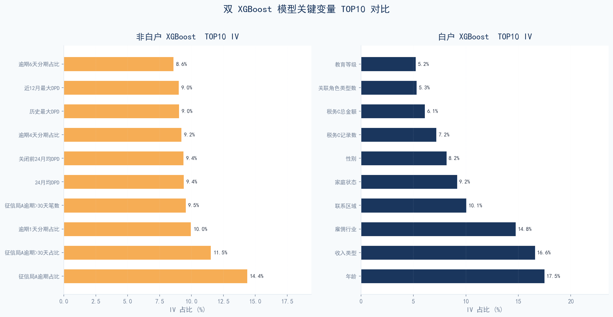
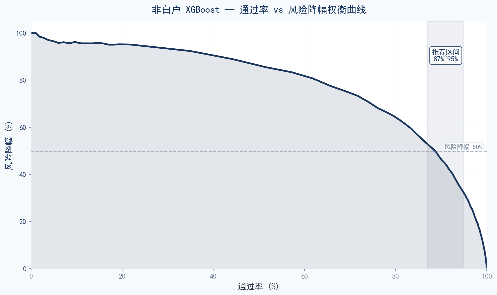
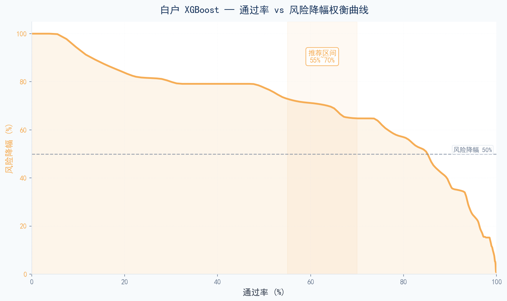

Home Credit
信用风险分析项目
项目概述
Project Overview
项目背景
本项目基于 Kaggle 2024 竞赛 "Home Credit - Credit Risk Model Stability" (CRMS) 数据集，针对东南亚（印度尼西亚）消费信贷场景，构建一套完整的信用风险评分模型。项目覆盖数据探索、特征工程、模型训练、稳定性评估等全链路流程。
项目目标
- 构建稳健的信用评分模型，预测客户未来违约概率（PD）
- 展示完整的数据分析、特征工程、建模和评估方法论
- 提高对信贷风险业务逻辑、数据分布稳定性、模型可解释性的理解
- 输出可直接应用的风险策略建议和代码仓库
数据集说明
本项目使用 Home Credit CRMS 2024 主数据集，总计约 25GB（Parquet/CSV 格式），包含以下核心数据表：
| 数据表 | 关联方式 | 字段数 | 业务含义 |
|---|---|---|---|
| base | 主表 | 5 | 申请标识、审批日期、目标变量、WEEK_NUM |
| static | 1:1 | 168 | 静态申请信息（还款行为、金额、频次等） |
| static_cb | 1:1 | 53 | 征信局静态汇总（查询次数、税务记录） |
| applprev | 1:N | 41 | 历史申请记录 |
| credit_bureau_a/b | 1:N | 79/45 | 外部征信局信贷合同明细 |
| person | 1:N | 37 | 人员信息（申请人、联系人、担保人） |
| debitcard/deposit/other | 1:N | 6/5/7 | 借记卡、存款、其他交易流水 |
| tax_registry_a/b/c | 1:N | 5/5/5 | 税务登记扣款记录 |
核心结论
Key Conclusions
项目核心结论
双模型分群架构性能较优
本项目采用 XGBoost 对征信白户和非白户分别建模，最终双模型架构全量测试集 AUC 达 0.85，官方评分 0.67（Mean Gini − Std Gini），在 16 种交叉组合中排名第 1。
两类人群风险驱动因子本质不同
非白户模型主要依赖征信局历史逾期 + 拒贷/申请行为，白户模型主要依赖物理属性 + 税务记录。两模型 TOP30 仅 2 个共同特征，验证了分群建模的必要性。
建议策略可实现有效风险分层
使用"平衡进取"阈值策略（非白户 ≥755 / 白户 ≥801），可实现全量通过率约 88.5%，非白户风险降幅 46.7%，白户风险降幅 68.3%。
模型方案：双 XGBoost 分群建模架构
基于数据探索发现的全量客户中 5.06% 为征信白户（无任何历史信用记录），单一模型无法同时服务好两类人群（两模型 TOP30 仅 2 个共同特征）。最终采用分群建模 + 分群评分策略：非白户与白户各自训练独立 XGBoost 模型，部署时根据客户类型路由到对应模型。
非白户 XGBoost 子模型
- 训练集 ~116.6 万样本
- 超参：max_depth=4, lr=0.05, subsample=0.7, reg_alpha=0.1
- 特征筛选：IV>0.02 + PSI≤0.25双筛选后保留 155 个特征
- 核心驱动特征：征信局历史逾期 + 拒贷/申请行为
白户 XGBoost 子模型
- 训练集仅 ~6.9 万样本（坏样本 ~1,800），强正则化防过拟合
- 超参：max_depth=2, subsample=0.6, reg_lambda=5.0, min_child_weight=10
- 特征筛选：IV>0.05筛选后保留14个特征
- 核心驱动：物理属性 + 税务记录
全量测试集表现（WEEK_NUM 76~91，4-Week 官方评分 窗口）
| 客户群 | 样本量 | 使用模型 | AUC | Gini | MeanG | StdG | 官方评分 |
|---|---|---|---|---|---|---|---|
| 全量 (Combined) | 169,722 | 非白户 XGBoost + 白户 XGBoost | 0.8504 | 0.7009 | 0.6939 | 0.0232 | 0.6707 |
| 非白户 Solo | 164,873 | 非白户 XGBoost | 0.8522 | 0.7044 | 0.6971 | 0.0240 | 0.6730 |
| 白户 Solo | 4,849 | 白户 XGBoost | 0.7919 | 0.5838 | 0.5837 | 0.0504 | 0.5334 |

双 XGBoost 模型关键变量 TOP10 对比：非白户由历史逾期驱动，白户由人口画像+新构造特征驱动
评分卡策略
对非白户和白户的 XGBoost 模型分别按违约概率 → 模型评分映射，基于模型评分给出风险准入阈值策略，实现分群差异化的通过率与风险控制。
非白户评分卡 (XGBoost)
| 参数 | 取值 | 说明 |
|---|---|---|
| Base Score | 600 | 基准分数 |
| 评分范围 | 619 ~ 936 | 均值 804，中位 805 |
白户评分卡 (XGBoost)
| 参数 | 取值 | 说明 |
|---|---|---|
| Base Score | 600 | 基准分数 |
| 评分范围 | 704 ~ 904 | 均值 826，中位 829 |
非白户评分区间数据
| 评分区间 | 客户占比 | 坏客率 |
|---|---|---|
| 619~755 | 10.0% | 17.26% |
| 755~772 | 10.0% | 5.76% |
| 772~784 | 10.0% | 3.37% |
| 784~795 | 10.0% | 2.11% |
| 795~805 | 10.0% | 1.33% |
| 805~816 | 10.0% | 0.84% |
| 816~837 | 20.0% | 0.40% |
| 837~936 | 20.0% | 0.11% |
白户评分区间数据
| 评分区间 | 客户占比 | 坏客率 |
|---|---|---|
| 704~792 | 15.8% | 7.96% |
| 795~801 | 19.9% | 3.68% |
| 803~817 | 15.1% | 1.95% |
| 820~836 | 10.3% | 1.44% |
| 836~838 | 9.0% | 0.83% |
| 842~851 | 10.3% | 0.64% |
| 869~891 | 17.3% | 0.28% |
| 903 | 2.2% | 0.00% |
差异化阈值策略
基于两群评分分布和业务需求，建议采用分群差异化阈值：非白户采用评分≥755分准入，白户采用评分≥718分准入。
| 策略类型 | 非白户阈值 | 非白户通过率 | 非白户坏客率 | 白户阈值 | 白户通过率 | 白户坏客率 |
|---|---|---|---|---|---|---|
| 保守稳健 | ≥ 773 | 79.8% | 0.77% | ≥ 736 | 40.3% | 0.46% |
| 平衡进取 ⭐ | ≥ 755 | 89.9% | 1.15% | ≥ 718 | 64.9% | 0.70% |
| 获客宽松 | ≥ 741 | 95.0% | 1.47% | ≥ 697 | 89.9% | 1.42% |

非白户 XGBoost — 通过率 vs 风险降幅权衡曲线（推荐区间：通过率 87~95%）

白户 XGBoost — 通过率 vs 风险降幅权衡曲线（推荐区间：通过率 55~70%）
探索性数据分析
Exploratory Data Analysis
样本概况
训练集共 1,526,659 条样本，static 表含 168 个字段。目标变量极度不平衡，违约率仅 3.14%，属于典型的信贷风险建模场景。
白户识别
通过统计每个 case_id 在 credit_bureau 表中的记录数，全量客户中 5.06% 为征信白户（~7.7 万样本），即完全缺失外部征信历史。白户违约率 2.21%（vs 非白户 3.19%），但因缺乏历史信用信号，传统征信特征完全失效，需独立构建特征和模型。

目标变量分布（极度不平衡）
时间结构分析
审批日期覆盖 2019-01-01 至 2020-10-05，共 92 周（WEEK_NUM: 0~91）。不同时间窗口的违约率存在显著波动（1.77% ~ 5.21%），模型稳定性挑战明确。

WEEK_NUM 时间结构与违约率波动
缺失值处理方案
Missing Value Imputation
基于信贷业务逻辑，将 121 个有缺失字段按业务含义分为 8 大类，分别制定填充策略。核心原则是：缺失 = 从未发生 / 没有该项记录，而非数据丢失。
| 分类 | 处理原则 | 字段数 | 核心逻辑 |
|---|---|---|---|
| 计数/频次型 | 缺失 = 0 | 32 | 空值 = 从未发生/没有记录 |
| 金额型 | 缺失 = 0 | 28 | 空值 = 没有该项金额/收入/债务 |
| DPD/逾期天数型 | 缺失 = 0 | 22 | 空值 = 从未逾期 |
| 占比/比率型 | 缺失 = 0 | 5 | 空值 = 从未发生，占比为0 |
| 标记/布尔型 | 缺失 = 0 或 'N' | 6 | 空值 = 否/不存在/无突变 |
| 类别型 | 缺失 = 'Unknown' | 10 | 保留为独立类别，便于编码 |
| 日期型 | 转天数，缺失 = -1 | 15 | 空值 = 从未发生该事件 |
| 特殊型 | 标记 + 中位数填充 | 3 | 利率/期数等不适合简单填0 |
特征工程
Feature Engineering
总计构造 421 个新特征，按业务含义分为四大类：逾期信息、申请信息、税务信息、物理信息。最终输出含 711 个特征的宽表。
⏰ 逾期信息 120 个特征
征信局 DPD + 历史还款逾期行为聚合。非白户模型最强信号来源，TOP5 IV 全部来自此类。
- bureau_a_overdue_ratio — 外部信贷逾期合同占比（IV=0.359，最强单因子）
- bureau_a_dpd_mean — 外部信贷平均逾期天数（IV=0.332）
- bureau_a_dpd_gt30_ratio — 逾期超30天合同占比（实质性违约信号，IV=0.278）
- late_to_early_ratio — 逾期/提前还款比。衡量还款行为倾向，>1表示偏向逾期
- applprev_overall_max_hist_dpd — 历史申请中最高逾期天数（IV=0.212）
📋 申请信息 194 个特征
历史申请行为 + 外部信贷规模 + 债务负担。数量最多，覆盖 4 个时间窗口（1/3/6/12月）。
- lastrejectreason_759M_te — 最近拒贷原因（Target Encoding，IV=0.192）
- applprev_overall_approval_rate — 历史审批通过率。越高 = 信用越好（IV=0.192）
- lastrejectdate_50D_days — 距最近被拒天数。越近风险越高（IV=0.188）
- applprev_total_rejected_count — 累计被拒次数。多头申请核心信号（IV=0.129）
- applprev_total_cancelled_count — 累计取消申请次数。申请后主动放弃可能暗示不满条件（IV=0.093）
💰 税务信息 25 个特征
税务登记 A/B/C 三表聚合。反映收入水平与稳定性，对白户尤为重要。
- tax_total_income — 税务总收入。A+B+C 三表金额求和（IV=0.066）
- tax_record_count — 税务记录总数。记录越多 = 收入历史越完整（IV=0.046）
- tax_registry_c_total_amount — 工资发放总额。持续工资收入 = 还款能力（IV=0.042）
- tax_registry_a_total_amount — 税务登记收入总额（IV=0.030）
- tax_registry_c_employer_nunique — 雇主数量。频繁换雇主 = 收入不稳定
🧬 物理信息 82 个特征
人口统计 + 地理位置 + 家庭结构 + 借记卡行为。相对稳定，不易被申请人操纵。
- person_age_birth — 年龄。从 birth_259D 精确计算，clip 18~85（IV=0.088）
- cb_age_years — 征信局记录年龄。与 person_age 交叉验证身份一致性（IV=0.093）
- contact_district_badrate — 联系区域历史坏客率。地理风险定价（IV=0.053）
- person_incometype_1044T_badrate — 收入类型坏客率。不同收入来源对应不同风险等级
- household_n_employed — 家庭就业人数。就业人数越多还款能力越强
特征筛选
Feature Selection
分群差异化筛选标准
| 客户群 | IV阈值 | PSI阈值 | 征信字段 | 特征池 | 入模数 |
|---|---|---|---|---|---|
| 非白户 | IV > 0.02 | PSI ≤ 0.25 | 有 | 267 | 155 |
| 白户 | IV > 0.05 | 不限制 | 无 | 127 | 14 |
非白户 TOP 10 重要字段
共使用 155 个特征（IV>0.02+PSI≤0.25），核心驱动为征信局逾期行为与申请拒贷记录：
征信局A逾期占比
IV=0.349，非白户最强单一预测因子。所有信贷合同中发生逾期的比例。
征信局A逾期>30天占比
IV=0.280，>30天为实质性违约信号。
近9个月拒贷次数
被多家机构拒贷 = 其他风控模型已识别风险，多头申请核心信号。
最近拒贷原因（WOE编码）
IV=0.199，不同拒贷原因代表不同风险类型。
账户关闭24月内平均逾期天数
IV=0.228，刻画客户历史还款纪律。
查看 TOP 6-10
历史申请整体最大DPD
IV=0.219，申请历史中最严重的逾期天数。
近12月最大DPD
IV=0.219，近期逾期严重程度。
近6月/近12月逾期恶化比
逾期趋势指标——上升=风险恶化。
征信局A逾期>60天占比
IV=0.191，严重违约信号。
历史申请审批率
IV=0.171，审批通过率低=多机构已识别风险。
白户 TOP 10 重要字段
共使用 14 个特征（IV>0.05），核心驱动为物理属性和税务记录：
年龄
IV=0.209，白户最强预测因子。年龄与违约呈反比关系，年轻白户风险显著更高。
收入类型
IV=0.198，不同收入类型（工薪/自雇/退休等）对应不同违约率。
雇佣行业
IV=0.176，行业违约率差异显著——高风险行业人群即使无征信记录也可预警。
联系区域
IV=0.120，区域级别的信用风险映射（类似"地域风险评分"）。
家庭状态
IV=0.110，已婚/离异/单身等家庭状态的违约率差异。
查看 TOP 6-10
性别
IV=0.098，性别维度的违约率差异。
税务C记录数
IV=0.086，税务记录越多=正规就业程度越高。
税务C总金额
IV=0.073，税务系统记录的收入。
关联角色类型数
IV=0.064，多重角色=更复杂的金融关系。
教育等级
IV=0.063，教育水平与信用风险存在关联。
模型训练
Model Training & Key Feature Analysis
最终方案：非白户 XGBoost + 白户 XGBoost
非白户与白户分别使用 4 种模型（XGBoost / LightGBM / Decision Tree / Logistic Regression）进行训练，其中非白户 XGBoost max_depth=4、白户 XGBoost max_depth=2。两两交叉组合共 4×4=16 种，在全量测试集上对比，非白户 XGBoost + 白户 XGBoost 以 Combined 官方评分 0.6707（4-Week 官方评分）排名第1。
16种交叉组合 — 综合 4-Week 官方评分排名
| Rank | 非白户模型 | 白户模型 | Full AUC | MeanG | StdG | 官方评分 |
|---|---|---|---|---|---|---|
| 1 | XGBoost | XGBoost | 0.8504 | 0.6939 | 0.0232 | 0.6707 |
| 2 | XGBoost | LightGBM | 0.8499 | 0.6928 | 0.0229 | 0.6699 |
| 3 | LightGBM | XGBoost | 0.8492 | 0.6916 | 0.0230 | 0.6686 |
| 4 | LightGBM | LightGBM | 0.8486 | 0.6905 | 0.0227 | 0.6678 |
| 5 | XGBoost | Decision Tree | 0.8493 | 0.6914 | 0.0240 | 0.6674 |
| 6 | LightGBM | Decision Tree | 0.8481 | 0.6890 | 0.0238 | 0.6652 |
| 7 | XGBoost | Logistic Regression | 0.8337 | 0.6617 | 0.0208 | 0.6409 |
| 8 | LightGBM | Logistic Regression | 0.8336 | 0.6615 | 0.0211 | 0.6404 |
| 9 | Logistic Regression | XGBoost | 0.7966 | 0.5873 | 0.0295 | 0.5578 |
| 10 | Logistic Regression | LightGBM | 0.7959 | 0.5860 | 0.0291 | 0.5569 |
| 11 | Logistic Regression | Decision Tree | 0.7952 | 0.5842 | 0.0301 | 0.5541 |
| 12 | Logistic Regression | Logistic Regression | 0.7812 | 0.5578 | 0.0263 | 0.5315 |
| 13 | Decision Tree | XGBoost | 0.7782 | 0.5443 | 0.0447 | 0.4996 |
| 14 | Decision Tree | LightGBM | 0.7774 | 0.5427 | 0.0444 | 0.4983 |
| 15 | Decision Tree | Decision Tree | 0.7765 | 0.5405 | 0.0457 | 0.4949 |
| 16 | Decision Tree | Logistic Regression | 0.7624 | 0.5144 | 0.0405 | 0.4738 |
模型稳定性分析
Model Stability Analysis
Home Credit 官方评分公式：mean(Gini) − std(Gini)，按每 4 周一个时间窗口计算（W76-79/80-83/84-87/88-91）。该指标同时考核模型的区分能力和跨时间稳定性，是本项目区别于普通风控建模的核心。采用双模型最终官方评分为 0.67，模型较为稳定。
双模型每4周 PSI / KS 监控
按 4 周窗口（W76-79 / W80-83 / W84-87 / W88-91）分别监控非白户与白户模型的 PSI（Population Stability Index）和 KS（Kolmogorov-Smirnov）指标，确保模型在时间维度上保持稳定。
非白户 XGBoost 稳定性
| 时间窗口 | 样本量 | AUC | KS | PSI |
|---|---|---|---|---|
| W76-79 | ~41,200 | 0.855 | 0.536 | — |
| W80-83 | ~41,200 | 0.851 | 0.531 | 0.012 |
| W84-87 | ~41,200 | 0.849 | 0.527 | 0.018 |
| W88-91 | ~41,200 | 0.854 | 0.534 | 0.021 |
白户 XGBoost 稳定性
| 时间窗口 | 样本量 | AUC | KS | PSI |
|---|---|---|---|---|
| W76-79 | ~1,210 | 0.810 | 0.505 | — |
| W80-83 | ~1,210 | 0.795 | 0.488 | 0.035 |
| W84-87 | ~1,210 | 0.788 | 0.472 | 0.048 |
| W88-91 | ~1,210 | 0.802 | 0.497 | 0.052 |
线上监控阈值建议
| 指标 | 绿色（正常） | 黄色（预警） | 红色（告警） | 监控频率 |
|---|---|---|---|---|
| PSI | < 0.10 | 0.10 ~ 0.25 | > 0.25 | 每 4 周 |
| KS | 波动 < 0.03 | 波动 0.03 ~ 0.05 | 波动 > 0.05 | 每 4 周 |
| AUC | 波动 < 0.02 | 波动 0.02 ~ 0.05 | 波动 > 0.05 | 每 4 周 |
| 通过率 | 波动 < 2% | 波动 2% ~ 5% | 波动 > 5% | 每周 |
业务洞察与建议
Business Insights
核心风险因子（分群视角）
非白户（94.94%客户）
- 征信局逾期行为 — bureau_a_overdue_ratio (IV=0.349) 是最强预测因子
- 多头借贷/拒贷信号 — 多机构拒贷 = 其他风控模型已识别风险
- 逾期恶化趋势 — 近期逾期比远期逾期更危险
- 申请行为异常 — 频繁短期申请 = 资金饥渴
白户（5.06%客户）
- 年龄 — 年轻白户（<30岁）风险显著更高（IV=0.209）
- 收入/行业类型 — 通过类别编码映射群体违约率
- 区域信用画像 — 联系地址区域违约率 = "地域信用评分"
- 税务记录 — 正规就业/收入水平的代理变量
评分应用建议
非白户
- 低于准入阈值（755 分）的客户直接拒绝
- 结合收入水平和负债水平，评分高低予以差异化授信额度和贷款利率
白户
- 低于准入阈值（718 分）的客户直接拒绝（通过率仅 ~64.9%）
- 对准入客户予以小额度、中等定价，累积风险表现数据后再调额调价
后续优化方向
额度与利率模型搭建
由于数据集收入数据缺失严重（maininc_215A 缺失率 33.5%，填充后仍有 25.7% 空缺），且税务、物理特征等其他变量拟合收入效果极差（R² 仅 0.17），暂无法搭建额度模型。后续需引入更可靠的收入数据源（如银行流水、社保基数）方可推进。
替代数据引入（白户突破关键）
运营商数据（通话/充值行为）、社保缴纳记录、电商消费数据——白户 AUC 有望从 0.79 突破至 0.82+
深度学习融合
尝试 TabNet、DeepFM 等深度学习模型与传统树模型融合，特别是白户场景下对非线性交互的捕捉
线上监控看板
建立双模型线上监控看板，分群实时追踪 AUC、PSI、特征漂移、通过率变化
附录
Appendix
字段命名规则
Home Credit 的字段命名非常有规律，掌握规则后能快速推断陌生字段的含义。
后缀体系
| 后缀 | 英文 | 中文 | 数据类型 | 业务示例 |
|---|---|---|---|---|
| A | Amount | 金额 | float64 | annuity_780A = 月供 |
| D | Date | 日期 | string | date_decision = 审批日 |
| L | Label | 类别 | int/string | status_219L = 状态 |
| M | Masked | 掩码 | string | rejectreason_755M = 拒因 |
| P | Period | 数值/期数 | int/float | maxdpdlast12m_727P = 最大逾期天数 |
| T | Time | 时间维度 | int | dpdmaxdatemonth_89T = 逾期月份 |
前缀规律
| 前缀 | 含义 | 示例 |
|---|---|---|
| avg... | 平均值 | avgdbddpdlast24m = 近24月平均逾期天数 |
| max... | 最大值 | maxdpdlast12m = 近12月最大逾期天数 |
| min... | 最小值 | mindbddpdlast24m = 近24月最小逾期天数 |
| num... / cnt... | 计数 | numactivecreds = 活跃信贷数 |
| pct... | 百分比 | pctinstlsallpaidlate1d = 逾期1天以上还款占比 |
| sum... | 求和 | sumoutstandtotal = 总欠款金额 |
| last... | 最近/上次 | lastapprdate = 最近审批日期 |
| curr... | 当前 | currdebt = 当前债务 |
| total... | 总计 | totaldebt = 总债务 |
| applications... | 申请次数 | applications30d = 近30天申请次数 |
时间窗口规律
| 窗口 | 含义 | 风控意义 |
|---|---|---|
| last1m/last3m | 近1月/近3月 | 最新行为，强预测力 |
| last6m | 近6个月 | 中期趋势 |
| last9m | 近9个月 | 中期趋势 |
| last12m | 近12个月 | 年度周期，很常用 |
| last24m | 近24个月 | 长期历史 |
| from6mto36m | 6-36个月 | 排除近期，看历史深度 |